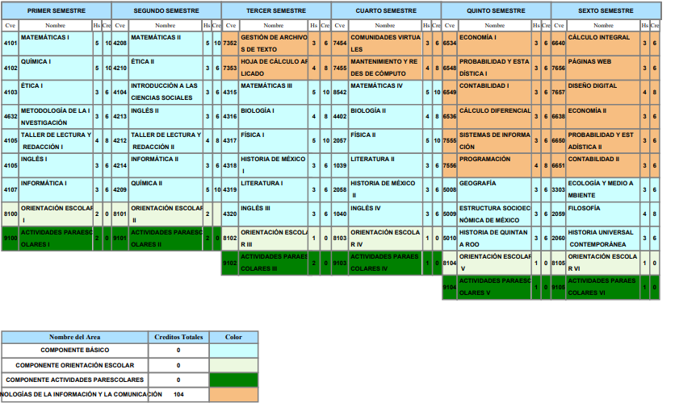

Tecnología de Información y Comunicación (TIC)
El estudiantado desarrolla habilidades de comunicación, verbales y no verbales, es decir, aprender a itlizar e interpretar lenguaje de códigos como html, java, css, etc.
Esto se vincula plenamente a la conclusión de problemas en los que se requieren elementos como algoritmos y la programación.
Mapa curricular:
